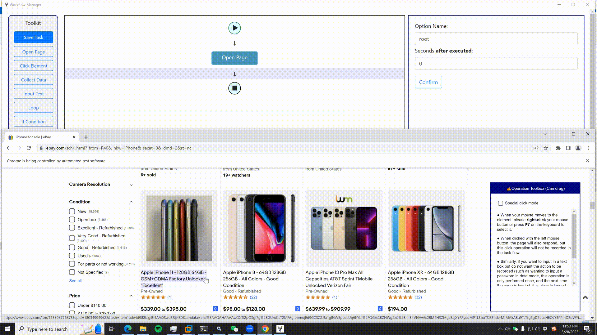

{{"New Task~新任务" | lang}}
{{"Example 1~示例1" | lang}}
{{"(Right click) Select a large product block -> Click the 'Select All' option -> Click the 'Select Child Elements' option -> Click the 'Collect Data' option, you can collect the information of all products, and will be saved by sub-field. ~ （右键）选中一个大商品块 -> 自动检测到同类型商品块 -> 点击“选中全部”选项 -> 点击“选中子元素”选项 -> 点击“采集数据”选项，即可采集到所有商品的所有信息，并分成不同字段保存。" | lang}}

{{"Example 2~示例2" | lang}}
{{"（右键）选中一个商品标题，同类型标题会被自动匹配，点击“选中全部”选项 -> 点击“采集数据”选项，即可采集到所有商品的标题信息。~ (Right Click) Select a product title, the same type of title will be automatically matched, click the 'Select All' option -> Click the 'Collect Data' option, you can collect the title information of all products." | lang}}
{{"同时，选中全部后如果选择“循环点击每个元素”选项，即可自动打开每个商品的详情页，然后可以再继续设置采集详情页的信息。~ At the same time, if you select the 'Loop-click every element' after selecting all, you can automatically open the details page of each product, and then set to collect the information of the details page." | lang}}
